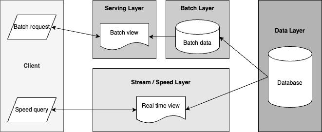

Table of Contents
Next page
Software Architecture for Real-time Big Data Forecasting Systems
Kinaxis Engineering Blog, Nov. 27, 2023
Machine learning engineering is a subset of software engineering...
Read the full text here.
University of Toronto vs UWaterloo: How to Decide?
Medium - The Wandering Engineer, July 8, 2021

University of Toronto (U of T) and University of Waterloo (UW) are the consensus top university picks for top high school students across Canada, especially for STEM disciplines. There are many pros and cons of each school...
Read the full text here.
For those considering the PEY Co-op program at University of Toronto
Medium - The Wandering Engineer, May 11, 2021

This post is my general advice for those considering the Professional Experience Year, or PEY co-op program at University of Toronto, St. George campus....
Read the full text here.
For anyone considering the Engineering Science program at University of Toronto
Medium - The Wandering Engineer, May 4, 2021

This post is for anyone considering the Engineering Science program at University of Toronto...
Read the full text here.